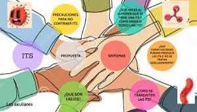
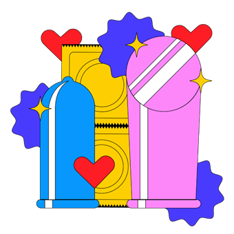

¿Cómo evitar las enfermedades de transmisión sexual?
La única forma de evitar completamente las enfermedades de transmisión sexual es no tener relaciones sexuales ni contacto sexual cercano. Para ayudar a reducir el riesgo de contraer una enfermedad de transmisión sexual, en caso de tener relaciones sexuales, haz lo siguiente:
· Usa un condón de látex cada vez que tengas relaciones sexuales (vaginales, orales o anales).
· Hazte la prueba para detectar enfermedades de transmisión sexual antes de iniciar relaciones con una nueva pareja.
· Ten relaciones sexuales con una sola pareja (que tampoco tenga relaciones sexuales con otras personas).
· Es importante que obtengas información sobre estas enfermedades para protegerte a ti mismo.
Prevención de ITS en adolescentes
La mejor manera en que los adolescentes pueden prevenir las ETS es no tener relaciones sexuales. Ellos deben comprender que cuando eligen tener sexo, esta es una decisión que puede afectarles por el resto de su vida. Los adolescentes deben saber que tener sexo puede ocasionar un embarazo o una ETS. Asegúrese de que su adolescente comprende los riesgos. Por ejemplo, asegúrese de que sabe que el síndrome de inmunodeficiencia adquirida (SIDA), el cual es ocasionado por el virus de inmunodeficiencia (VIH), es una causa importante de muerte en las personas de 15 a 24 años. La presencia de otras ETS como la clamidia, herpes, gonorrea y sífilis pueden aumentar la probabilidad de contraer una infección de VIH. De acuerdo con el Centro de control y prevención de enfermedades, las personas que tienen ETS tienen por lo menos de 2 a 5 veces más riesgo de adquirir VIH por medio del contacto sexual.
Las infecciones de transmisión sexual también pueden ocasionar enfermedad inflamatoria pélvica en las mujeres (una infección del útero y las trompas de Falopio) y epididimitis en los hombres (inflamación del tubo en espiral detrás de los testículos). Las complicaciones de las ETS pueden ocasionar infertilidad o un embarazo ectópico (un óvulo fertilizado que crece fuera de la matriz). Si una mujer está embarazada, un ETS puede infectar su bebé.
Los adolescentes pueden enfrentar presión de los compañeros para tener sexo. Ellos deben comprender que pueden resistir esa presión y que está bien esperar para tener sexo. Recuerde a su adolescente que decir “no” posiblemente no será fácil algunas veces, pero decir “no” en la actualidad es mejor que hacer algo de lo que pueda arrepentirse mañana. Proporcione alguna guía sobre lo que su adolescente puede
“Me gustas mucho, pero aún no estoy listo para tener sexo”.
“En realidad me divierto mucho contigo y no me gustaría arruinar nuestra relación con el sexo”.
 “Eres una persona maravillosa, pero el sexo no es la forma en que yo demuestro que alguien me gusta”.
“Quiero esperar hasta casarme para tener sexo”.
Además, dígale a su adolescente que consumir alcohol o drogas puede afectar su capacidad de tomar una buena decisión. Las drogas y el alcohol pueden hacer que sea más difícil permanece firme acerca de la elección de esperar para tener sexo. Incluso los adolescentes que son sexualmente activos pueden intentar comportamientos sexuales de alto riesgo mientras toman alcohol o usan drogas.
Si un adolescente empieza a tener sexo, es importante que practique el sexo seguro. El sexo seguro significa usar un método anticonceptivo de barrera (por ejemplo, preservativos de látex) cada vez, empezando con la primera experiencia sexual. Los preservativos no son una garantía contra las ETS. La única manera de prevenir realmente el contagio de una ETS es no tener sexo. Sin embargo, los preservativos pueden reducir significativamente el riesgo de ETS y VIH. Hable con su adolescente acerca de cómo puede reducir su riesgo de ETS al limitar la cantidad de parejas sexuales durante su vida.
Cualquiera que es sexualmente activo debe hacerse pruebas de ETS regularmente. Las mujeres deben hacerse un examen de Papanicolaou anualmente. Esta es la primera línea de defensa contra el cáncer cervical y los cambios precancerosos ocasionados por el papiloma virus. Muchos médicos recomiendan que todos los adolescentes sexualmente activos se hagan pruebas dos veces al año para gonorrea y clamidia y una vez al año para sífilis. La asesoría regular sobre el VIH también es importante. Las pruebas se deben realizar con más frecuencia si ocurren síntomas como una descarga vaginal anormal, irritación o dolor.
 Úso correcto de preservativos
Para prevenir la transmisión de ETS, se debe enseñar a los adolescentes cómo usar los preservativos de manera efectiva. El preservativo debe estar hecho de látex. Los estudios de laboratorio han demostrado que el VIH y otros virus pueden pasar a través de los preservativos de membrana natural o de piel de cordero. Recuerde a su adolescente que otras formas de control anticonceptivo, incluyendo píldoras anticonceptivas, inyecciones como Depo-Provera y los implantes como Norplant, no previenen las ETS. Solo los preservativos de látex ofrecen esta protección.
· Se debe usar un nuevo preservativo cada vez que su adolescente tiene sexo.
· Los preservativos se deben manipular con cuidado para evitar que se rompan o corarlos con las uñas, los dientes o instrumentos afilados.
· Un preservativo se debe colocar en el pene después de que está erecto y antes de cualquier contacto genital.
· Se debe usar suficiente lubricación durante las relaciones sexuales con un preservativo. Si se usa un lubricante en la parte externa del preservativo, debe ser un producto a base de agua como K-Y Jelly, Astroglide o Aqua-Lube. Los lubricantes a base de aceite como la vaselina o las lociones corporales pueden debilitar el material látex.
· Al retirarlo, el preservativo se debe sostener firmemente contra la base del pene para evitar que se deslice. El retiro se debe hacer con el pene aún erecto.
· Un preservativo femenino, hecho como una funda de poliuretano lubricado y llamado Reality, también está disponible. Siga las instrucciones en el empaque del producto para usarlo correctamente.
¿Está en riesgo su adolescente?
Varias parejas sexuales
Contacto sexual con una o más personas con una ETS conocida, ya sea en el presente o en el pasado
meses
Más de 2 parejas sexuales en los últimos 12 meses
Síntomas o signos de una ETS
Haber sido un paciente en una clínica de ETS
No usar anticonceptivos o el uso de un anticonceptivo sin barrera (por ejemplo, píldoras anticonceptivas)
Actividad homosexual masculina
Personas sin hogar
Uso de drogas inyectadas (por ejemplo, heroína)
Participar en “sexo de supervivencia” (por ejemplo, intercambiar sexo por dinero, alimentos, drogas o refugio)
Haber pasado tiempo en una instalación de detención